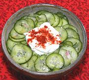

|
Cucumber SaladHungary - Uborka Salata | ||||
| Serves: Effort: Sched: DoAhead: |
6 salad ** 1-1/4 hrs Best |
Similar to cucumber salads from other northern and eastern European regions, this salad is considered essential to serve with some of the famous Hungarian stews. | |||
|
1-1/2 2 1 1-1/2 3/4 1-1/2 1/2 ------ |
# oz T c c t t --- |
Cucumbers (1) shallot Dill, fresh Vinegar (2) Water Sugar Salt -- Garnish Sour Cream Paprika (3) |
Make - (1-1/4+ hr -12 min work)
|